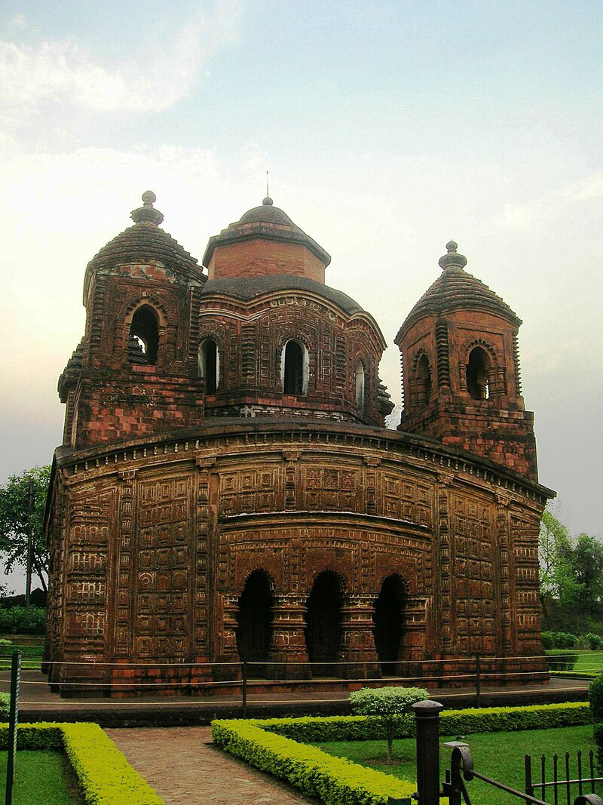

About Us
History of Bishnupur
Bishnupur is a historically significant town in the Bankura district of West Bengal, India, renowned for its rich cultural heritage, especially in the fields of architecture, music, and traditional crafts. Founded by the Malla kings in the 7th century, Bishnupur flourished as a hub of art and culture, leaving behind a legacy that continues to draw visitors today.